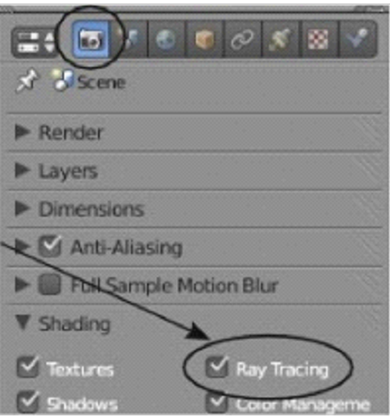
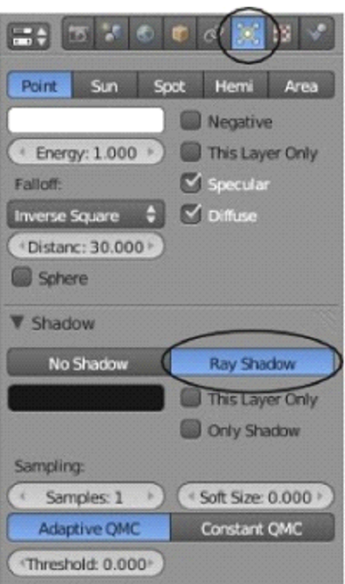
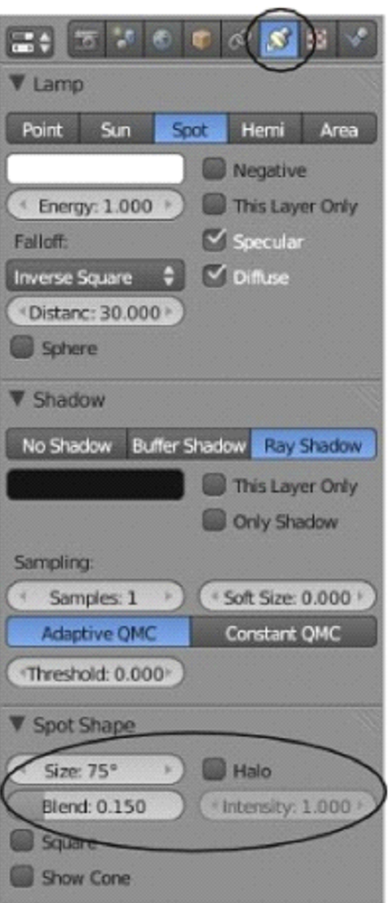
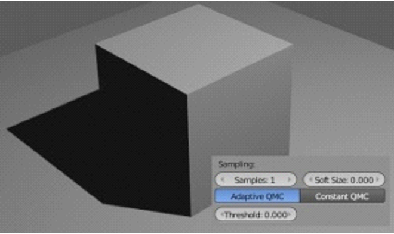
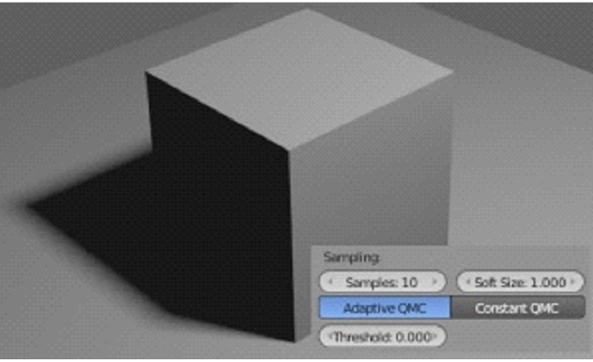
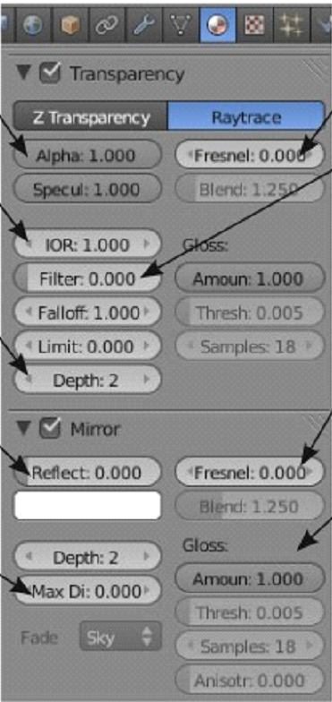
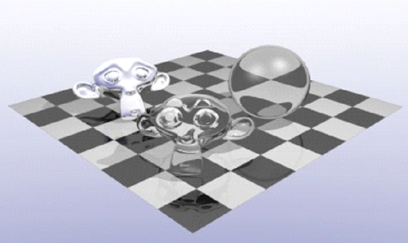

aug2023
feb2023
dec2023
два кота
(с iframes)
Глава 8 - Трассировка Лучей (отражение, прозрачность, тени)
Автор: James Chronister
Оригинальный перевод: Юлия Корбут aka Balista
Переработка текста: Азовцев Юрий aka gumanoed
Ray-Tracing используется для создания зеркальных и отражающих поверхностей. Эта технология также позволяет создавать эффект прозрачности и преломления (искажения изображения через прозрачные поверхности, как в случае с увеличительным стеклом или линзой). С помощью ray-tracing любая лампа сможет отбрасывать тень. Вы можете создавать различные удивительные эффекты с помощью этой технологии - однако время на отрисовку изображения (рендер) значительно увеличится. Используйте эту функцию только при необходимости. Не пытайтесь включать Raytrace везде. Профессионалы так не делают. Посмотрите любой 3D ролик по телевидению и вы увидите, что отражение и преломление используются лишь там, где это действительно необходимо. Вы можете получить отличные эффекты теней и текстур с традиционными для Blender лампами и настройками материалов, сэкономив при этом огромное количество времени на рендеринге.
Для использования ray-tracing вам нужно перейти в раздел Render, найти панель Shading и активировать функцию "Ray Tracing" (смотрите предыдущую главу). Теперь вы сможете использовать свойства ray-tracing на ваших объектах. Пока вы этого не сделаете, разницы между обычным рендером и рендером с ray-tracing не будет.

Освещение и Тени

Для получения ray-теней от ламп, выберите лампу, которая должна создавать тени (при применении технологии Ray-Tracing все типы ламп могут это делать), в Окне Свойств перейдите в раздел Lamp, найдите большую кнопку "Ray Shadow" и нажмите ее.
Когда вы включите ray-тени, в настройках большинства ламп появится несколько дополнительных параметров. Параметр "Soft Size" влияет на мягкость границ тени, а параметр "Samples" на качества тени.

Также вы увидите две опции с названием "Adaptive QMC" и "Constant QMC". Это два способа генерации теней. Adaptive работает быстрее, в то время как Constant дает лучшее качество, но требует большего времени для просчета.
Обычно используются еще несколько настроек при работе с ray-освещением. На панели "Spot Shape" вы найдете параметры Spotlight Size, Spotlight Blend и Halo Intensity. Все они работают точно так же, как и при использовании традиционной Shadow Buffer технологии.


Обратите внимание на тени в иллюстрации выше. Левое изображение было отрендерено с параметром Samples равным 1 и параметром Soft равным 0. Правое же со значениями 10 и 1 соответственно.
Отражение (зеркальность) и Преломление (прозрачность)
Для создания зеркальной или отражающей поверхности на объекте, выберите этот объект и добавьте ему материал. Вы также можете добавить на объект текстуру и сделать ее зеркальной. В Окне Свойств в разделе Material, найдите панель Mirror. Все параметры прозрачности находятся здесь. Активируйте панель "Mirror" и поэкспериментируйте с настройками отражения. Слайдер Reflect контролирует степень отражения. Максимальное значение создаст эффект идеального зеркала.
Для создания прозрачности объекта активируйте панель "Transparency". Два главных элемента управления прозрачностью: IOR (Индекс Преломления) - контролирует степень преломления лучей и создает эффекта Линзы; и Fresnel - регулирует степень прозрачности. Здесь есть и другие параметры, с которыми вы можете поэкспериментировать, но эти два основные.
Alpha этот параметр прозрачности используется и Ray-прозрачностью
IOR (индекс преломления) контролирует степень искажения в прозрачном объекте
Depth если вы ничего не видите сквозь прозрачный объект, значение этого параметра следует увеличить
Reflect управляет степенью отражения. Максимальное значение даст вам идеальное зеркало или хромированную поверхность.
Distance и Fade управляет расстоянием от объекта на котором другие объекты будут отражаться полностью. По мере приближения к указанному расстоянию будет происходить их постепенное затенение 0 означает отсутствие ограничений.
Fresnel контролирует степень Ray-прозрачности
Filter/Fallout/Limit эти параметры управляют эффектами, влияющими га способ прохождения света через объект
Fresnel в панели mirror этот параметр контролирует эффект затуманивания отраженных объектов
Gloss набор этих параметров контролирует дополнительные эффекты Ray-отражения


На изображении слева используется малое значение параметра отражения на полу и большое на голове обезьянки сзади, для получения эффекта хрома. Голова обезьянки на переднем плане и шар имеют высокое значение параметра Fresnel и IOR для симуляции стекла и преломления.
Практическое Задание: Использование технологии Ray-Tracing